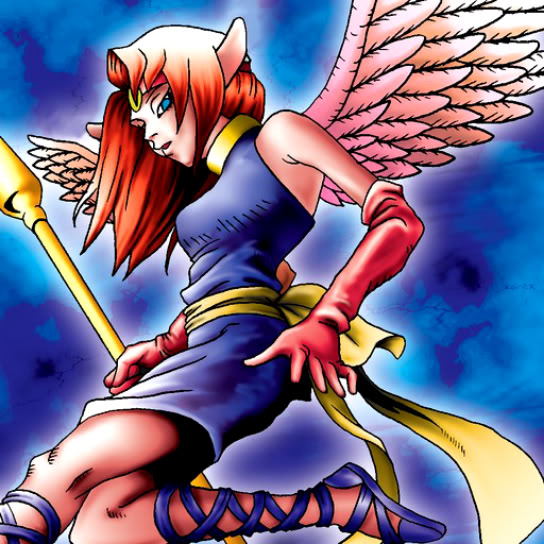

LaMoon

STATS
ATK: 1200
DEF: 1700DECK COST
Deck Cost per Card: 29Fusion List (15 Possible Fusions)
- LaMoon + Ansatsu = Cocoon of Evolution
- LaMoon + Catapult Turtle = 30,000-Year White Turtle
- LaMoon + Firegrass = Queen of Autumn Leaves
- LaMoon + Fusionist = Nekogal #2
- LaMoon + Hane-Hane = Nekogal #2
- LaMoon + Hitotsu-Me Giant = Nekogal #2
- LaMoon + Hourglass of Courage = Dark Witch
- LaMoon + Morphing Jar = Mystical Sand
- LaMoon + Muka Muka = Mystical Sand
- LaMoon + Nekogal #1 = Nekogal #2
- LaMoon + Shining Friendship = Dark Witch
- LaMoon + Silver Fang = Nekogal #2
- LaMoon + Spike Seadra = Kaminari Attack
- LaMoon + Stone Armadiller = Mystical Sand
- LaMoon + Thunder Dragon = Kaminari Attack